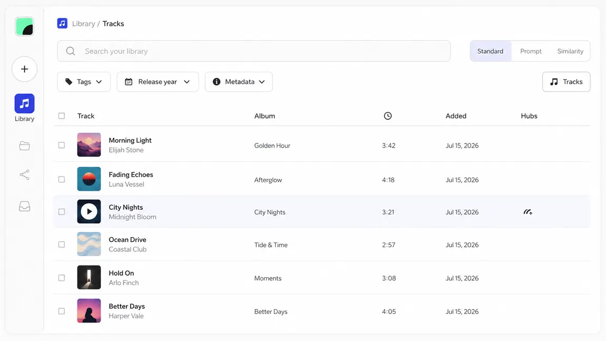
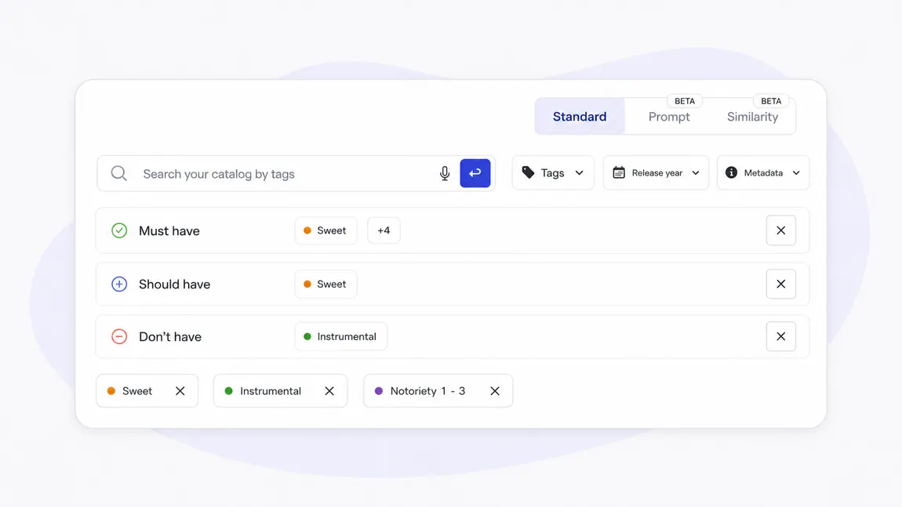
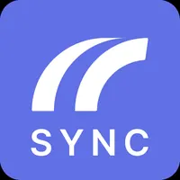
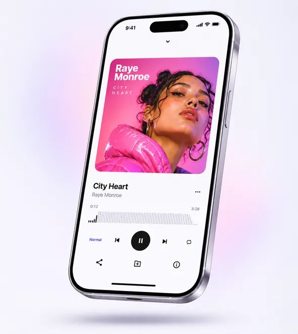
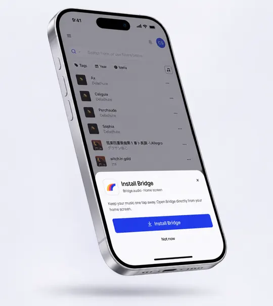

Bridge.audio vs DISCO.One platform. More possibilities.
Organize, receive, search, share and get discovered in one connected music platform. Built for artists, managers, labels, publishers, producers, supervisors and creative teams, with AI Smart Search in Pro and a clear path from DISCO.
Quick view first, full comparison below. Based on documented features and public starting prices; optional Hubs and plan conditions apply.

Everything your music team needs.
Less to manage.
Four reasons Bridge is worth considering, even when DISCO already does the essentials.
One music ecosystem, not just one team.
From artists and managers to labels, publishers, producers and supervisors: one connected ecosystem across music and entertainment. Smart Inbox receives music without chasing links.
See Discovery Hubs 02 · AI THAT COMES WITH PRODescribe a track. Refine the tags. Find it.
Prompt and Similarity Search are included in Bridge Pro, with editable criteria. DISCO offers AI tools too, with separate Discovery Suite and AIMS conditions.
See the search workflow 03 · NO LOST CATALOGKeep your music and its metadata.
Bring over your entire DISCO music catalog. Bridge retains catalog metadata and replaces DISCO-generated AI tags with fresh Bridge tagging.
Understand migration 04 · CLEARER TEAM VALUE7 seats. AI Search. From €9/mo.
Bridge Music Pro starts at €9/mo with 1,000 tracks, seven seats and Smart Search. Built for more than sync teams; Hub publication is optional.
Compare pricingOfficial references: Bridge pricing · DISCO pricing · DISCO AIMS · DISCO share expiry ·
Want the details?
Compare what actually matters.
Use this side-by-side to inspect where the platforms overlap and where Bridge changes the workflow. DISCO has capable pitching, search and discovery tools; differences depend on plans and how teams work.
| What you need | DISCO | Bridge.audio |
|---|---|---|
| Catalog & metadataCore overlap | Both store tracks, metadata, versions and playlists | Workspace library, metadata, Projects and Sub-projects |
| Receive new musicBridge advantage | Inboxes on business plans | Smart Inbox available even on Free |
| AI auto-taggingDifferent approach | Auto-tagging via plan / Discovery Suite | Advanced Bridge AI tagging in Pro |
| Metadata & tag filtersCore overlap | Keyword search, tags, metadata and new inline filters | Structured tags, metadata and progressive filters |
| Prompt & Similarity SearchDifferent approach | Prompt and similarity search available through paid AIMS; DISCO also has native search and filtering | Advanced Smart Search included in Bridge Pro |
| Keep control after an AI promptBridge distinction | DISCO supports filtering and tag editing; the same prompt-to-editable-tag workflow is not documented | AI converts descriptive prompts into editable tags and refinable criteria |
| Sharing, pitches & analyticsCore overlap | Playlists, links, tracking and campaigns by plan | Trackable shares, Projects and activity insights |
| External discoveryDifferent approach | Opted-in Catalogs searchable together via MultiDISCO for eligible supervisors; Discover Music also browses catalogs | Bridge Sync, Bridge Library and Bridge Score: specialist Hubs |
| Email Creator / marketing campaignsDISCO advantage | Native Email Creator (Plus+) | No equivalent campaign builder claimed |
| Lyrics & instant instrumentalsDISCO advantage | Discovery Suite includes transcription and instant instrumentals | No equivalent native feature claimed |
| Mobile catalog workflows Different approach | Native iOS and Android apps, including offline playback; public reviews report some mobile friction | Responsive Workspace and music player, with home-screen access via web app (PWA) |
| Team seats at starting business priceBridge advantage | Plus: 1 included user | Music Pro: 7 included seats |
| Switch from DISCOBridge advantage | Export or keep working in DISCO | Import the full catalog and metadata; replace DISCO-generated AI tags with Bridge tags |
All prices, features and add-ons depend on plan and eligibility. Published capabilities are compared, not proprietary performance benchmarks. Bridge confirms full-catalog DISCO ingestion and replacement of its generated AI tags. User-reported mobile issues are qualitative, not speed tests.
DISCO pricing ↗Bridge pricing ↗Find a track in seconds.
Stay in control of the answer.
DISCO also has AI search. What feels different in Bridge is the next step: your prompt becomes editable musical tags, so you can stay in control instead of treating the first list of results as final.
Combine structured tags and metadata to narrow a catalog precisely.
DISCO supports metadata filters, editable auto-tags and similarity search; it has invested in a new search experience. The specific prompt-to-editable-tag refinement shown here is documented for Bridge, not an independent relevance ranking.

One Workspace.
Three ways to be discovered.
Your private Workspace is where your catalog stays organized. The three Bridge Discovery Hubs are places for eligible music to meet new professional searches beyond your existing contacts.
Everything in one place.
One place to receive music, enrich metadata, answer briefs, collaborate and share. No change of tool for each step.

Make the right music findable.
Specialized professional discovery: buyers search across participating music within each Hub instead of needing a private share link from every rights holder.

Hub publication is optional and subject to plan, quota and eligibility. Bridge Library serves music libraries; Bridge Score is dedicated to original scoring and is in beta.
Fair distinction: DISCO is not limited to browsing one rights-holder at a time. MultiDISCO Search already searches across participating Catalogs for music supervisors. Bridge focuses on three specialist discovery environments with distinct use cases. DISCO documentation ↗


Your catalog goes
where you go.
Listen, review and work from your phone with Bridge’s responsive web experience. Add Bridge to your home screen as a web app, with steps that depend on your device and browser. DISCO also has native iOS and Android apps.
“the app is slow, unresponsive, and quite buggy”Padraig Norton · Google Play review · 17 July 2026 · Original review ↗
DISCO continues to update its apps, and one review does not establish relative speed or reliability. Phone images are Bridge-provided concept mockups, not live mobile benchmarks.
When familiar workflows
start feeling heavy.
Velvetica used DISCO for pitching and Dropbox for storage. Its published Bridge case study describes easier catalog navigation, more consistent tagging, and 389 sync projects created during its first year with Bridge. Its 56,000-track catalog is a historical case-study figure.
Read the complete customer story ↗I didn’t find Disco well designed for navigating the catalog. Bridge is much more comfortable for storage and navigation.Arnaud Gimat · Velvetica · Published Bridge case study (July 2025)
The same case also documents two tracks discovered on Bridge Sync that led to licensing conversations, not confirmed completed placements. See the published account ↗
Team access included.
Advanced search, without the AIMS add-on.
Bridge includes Smart Search in its Pro plans. DISCO brings strong native pitching features, with AI and discovery options that change the configured total. Compare seats, catalog size, add-ons and billing terms before deciding.
1,000 tracks at entry · 7 included seats · Smart Search and advanced auto-tagging. Hub exposure optional.
Explore Bridge plans ↗1,000 files and 1 user at the starting price. Discovery Suite: +$10/month for 250 tracks or +$40/month for 1,000. AIMS is separately priced on request.
Explore DISCO plans ↗Prices observed 19 November 2026 on official pricing pages. DISCO Plus $16.99/month and Pro $26.99/month are monthly equivalents billed annually, for 1 user and 1,000 files. Its Discovery Suite is optional and has a separate track quota (1,000 tracks: $40/month); AIMS requires a separate quote. Bridge Music Pro starts at €9/month for 1,000 tracks and 7 included seats, with Hub exposure an optional additional choice. Different currencies, billing terms and units mean this is not a total-cost or percentage-savings claim.
Your DISCO catalog.
A fresh start without starting over.
Move all your music files and existing catalog metadata directly from DISCO into Bridge. Bridge regenerates AI tags instead of retaining DISCO’s AI-generated tags. Your music stays yours; the search layer gets a fresh start.
Migration scope provided by the Bridge team. Import options and assistance depend on account setup; the tool does not carry DISCO’s previous AI-generated tags forward.
What you need to know.
Nothing more.
Can I move my entire DISCO catalog to Bridge?
Yes. Bridge supports migration of the full DISCO music catalog and its existing metadata. Previously generated AI tags are replaced by Bridge auto-tagging; assistance and account configuration may vary.
What makes Bridge’s AI search different from DISCO + AIMS?
Both platforms support prompt and similarity search, and DISCO offers editable tags and filtering. Bridge turns descriptive or reference queries into editable musical tags with Must Have, Should Have and Don’t Have options, which lets you continue refining the result set. AIMS is a separately priced DISCO add-on.
Can DISCO search across multiple music catalogs?
Yes. MultiDISCO Search allows eligible music supervisors to search tracks across participating rights-holder catalogs. Bridge provides a different discovery model through three specialized Hubs: Bridge Sync, Bridge Library and Bridge Score.
Is Bridge cheaper than DISCO?
Bridge Music Pro starts at €9/month with seven seats and 1,000 tracks. DISCO Plus starts at $16.99/month, billed annually, with one user and 1,000 files; Discovery Suite has separate track-based pricing, and AIMS is extra. Ask for matching configured quotes before calculating savings.
Can I publish my catalog to Bridge’s professional Hubs?
Eligible content can be submitted to Bridge Sync (sync licensing), Bridge Library (production music) or Bridge Score (original scoring). Access, quota and eligibility conditions apply, and Hub exposure is optional.
Where is DISCO stronger?
DISCO has native Email Creator, established pitching and contact workflows, and Discovery Suite extras such as lyric transcription and instant instrumentals. Teams depending on those features should assess the differences before switching.
Sources & methodology
Public information checked 19 November 2026. Bridge capabilities and migration scope include information provided by Bridge; competitor features and prices link to official documentation, in their original currency and billing cadence. The Velvetica customer story is published by Bridge. The Google Play quote is one dated user review, not a usability study or performance test. Product screenshots are Bridge interfaces; no competitor screenshot has been modified or recreated.